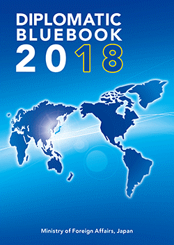
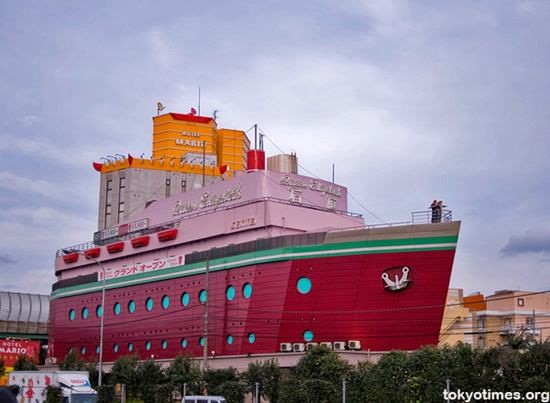
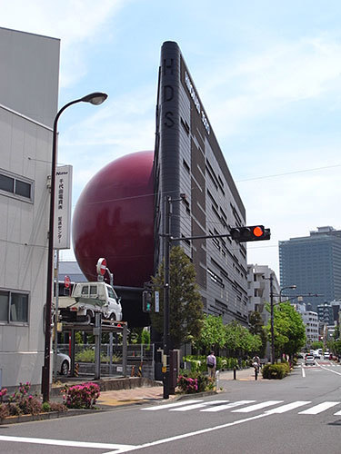
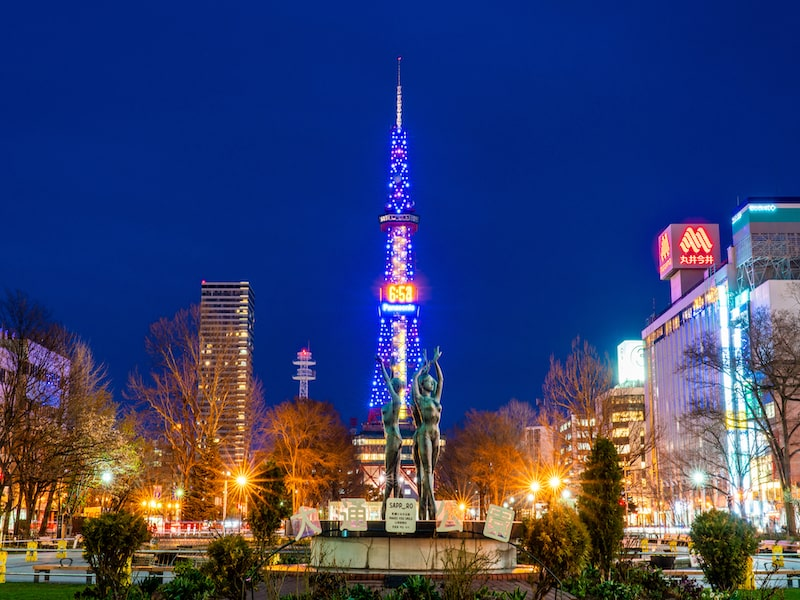
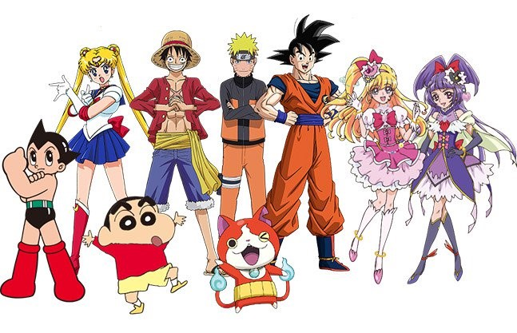
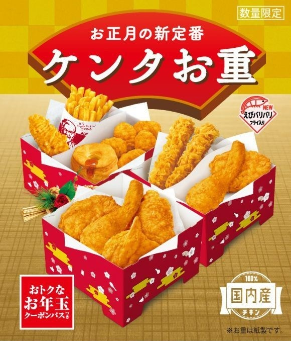
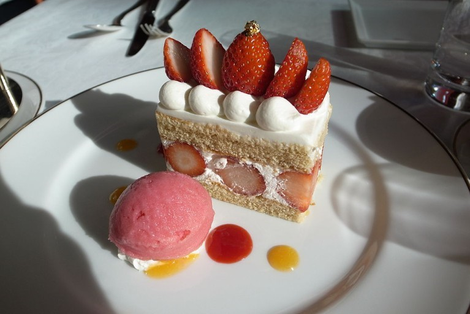
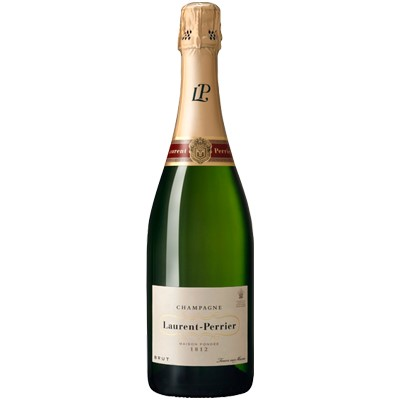
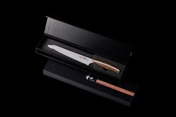
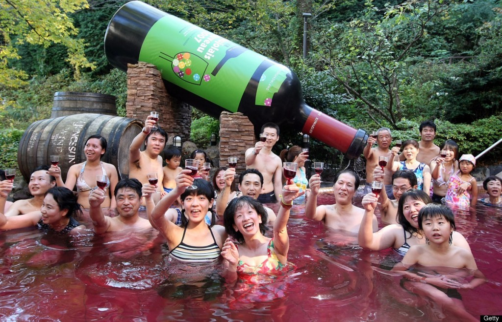

|

(and that got me to thinking on New Year’s Eve eve, or perhaps it was a dream brought on by too much KFC, strawberry shortcake, Laurent Peerier and Dip — now there’s a perfect New Year’s DipCon Japanese-style) … LET’S GO BACK TO JAPAN, PERRY, BABE RUTH, AND DUNNIGAN
Famous Japanese painting: “The Battle of Awazu” (Ukiyo-e) The Diplomatic Courier: “The Japanese Model in Diplomacy” (Japan is one of the few countries were female diplomats were as highly regarded as males. This interesting article has some background on Japanese diplomacy.) 
Japanese depiction of a Black Ship Searching in History: “Perry’s Gunboat Diplomacy in Japan” (Just looking at the Google images of Perry’s visit to Japan reveals a lot about Japanese-American diplomacy.) 
Baseball star Babe Ruth visits Japan Japan Today: “The Sultan of Swat Babe Ruth visits Japan” (Japan’s fascination with American games goes back a long way.) 
BoardGameGeek: Jim Dunnigan, Boardgame Designer
One of the greatest losses in Diplomacy history took place at DIPCON XXII in San Diego when I very naively traded my carefully acquired set of the first 30 or so issues of S&T — that I had acquired by trading my Diplomacy ‘zine XENOGOGIC for them — with Jim Dunnigan while he was in Japan. At that time the ‘zine was actually printed in Japan and then shipped to the US for distribution. What did I get in return? Ron Spitzer offered me two copies of the European version of Diplomacy for my never punched S&Ts. As first I hesitated, but Ron had a way with words and the ability to charm oil out of a snake and I eventually agreed. Not since the Russians sold Alaska has … Steve Cooley still cries when he remembers that story. I only mention this because it shows how far back the history of Diplomacy actually goes in Japan. Dunnigan was trading with a half-dozen or so of the postal Diplomacy hobby’s earliest publishers, probably looking for prospective S&T subbers. BUT WHERE TO HOST OUR EVENT?Dip venues are famous in Japan. Here are two from Tokyo, one from Kyoto and one from somewhere else. Can you guess?

Love hotels are part of Japan’s tradition, and the Queen Elizabeth is regarded as the most popular of them all. It’s not because of the great service, but more because of its wacky design. At 92 the Grand Old Dame would be proud!

Ground prices are sky high in Tokyo, so every square meter counts, even if they’re not square. Triangular buildings, where two streets meet at a sharp angle, can be found all over the city. This one, the Sunburst in Meguro, takes the cake by virtue of the giant red ball attached to it like an oversized tumor. (dh) Given the abundance of temples and shrines in the country, it’s not entirely impossible that one might be rented for a peaceful conference, DipCon style. This golden temple in Kyoto, called Kinkakuji, is probably not the first place to look into. (dh)

Whenever you see a TV tower in Japan, you might be excused for thinking you just landed in Paris. Tokyo started the trend with Tokyo Tower, a red version of the Eiffel Tower, now eclipsed by the similarly shaped Sky Tree. Pictured here is the TV tower in Sapporo (Hokkaido). (dh) AND WHO SHOULD THE HOST AND TOURNAMENT DIRECTORS BE?Fandom One Piece Wiki: Monkey D. Luffy
Fandom Dragon Ball Wiki: Frieza
Japanese manga and anime series tend to be very long-lived with an ever expanding caste of characters, none of whom is actually allowed to die. You need a cheat sheet just to find out who's who, as so many of them appear even in a single episode. Unless you’re an otaku, that is. (dh) AND WHAT OF OUR GUESTS?Guests come costumed as their fav anime characters and must play their games in character.

Quiz: How many characters from which series can you recognize?
AND FOR ENTERTAINMENT?Let’s forget the K-pop eye candy kids and invite some real musicians from Belgium! Am I supposed to be flattered now? There’s hardly any smurf merchandise to be found in Japan. They’re just not popular here. (dh) AND WHAT DO DIPPERS LIKE BEST AFTER A DIP A GAME?A good meal, of course. Meet our hostesses: Gabriella, Raphaella, Uriella and mama Ella. Meet Gabriella Gershenson, who is based in New York City, where she is a free-lance food writer focusing on arts and entertainment, food and dining, in the Metro New York area and wherever her travels take her. Here are a few tidbits from a recent story she did for the WSJ, used with her permission.

Gorge Yourself with KFC for the Fat and Salt

Eat Strawberry Shortcake for the Sugar
AND TO WASH IT ALL DOWN?What else but a bottle or two of world class champagne? Japan is one of the world’s largest premium Champagne markets and popular brands include: Moet & Chandon, Veuve Cliquot, and Laurent-Perrier!

Vinepair: The 10 Bestselling Champagne Brands In the World
Rumor has it that Taittinger has a five year wait to get on their preferred customer’s waiting list; which is another ten years long. NO VISIT TO JAPAN IS COMPLETE WITHOUT AN OMIYAGELest we forget why we’re gathered together for this occasion, each guest receives a special host’s souvenir gift: Their very own monogrammed…

AND TO HELP YOU CURE THE HANGOVER THE NEXT DAY…

UNTIL OUR NEXT NEW YEAR’S DIPCON WHEREVER IT HAPPENS TO BE —幸せな一突きと最高級の指！
Shiawasena hitotsuki to saiko-kyu- no yubi!
If you wish to e-mail feedback on this article to the author, and clicking
on the envelope above does not work for you, feel free to use the
|